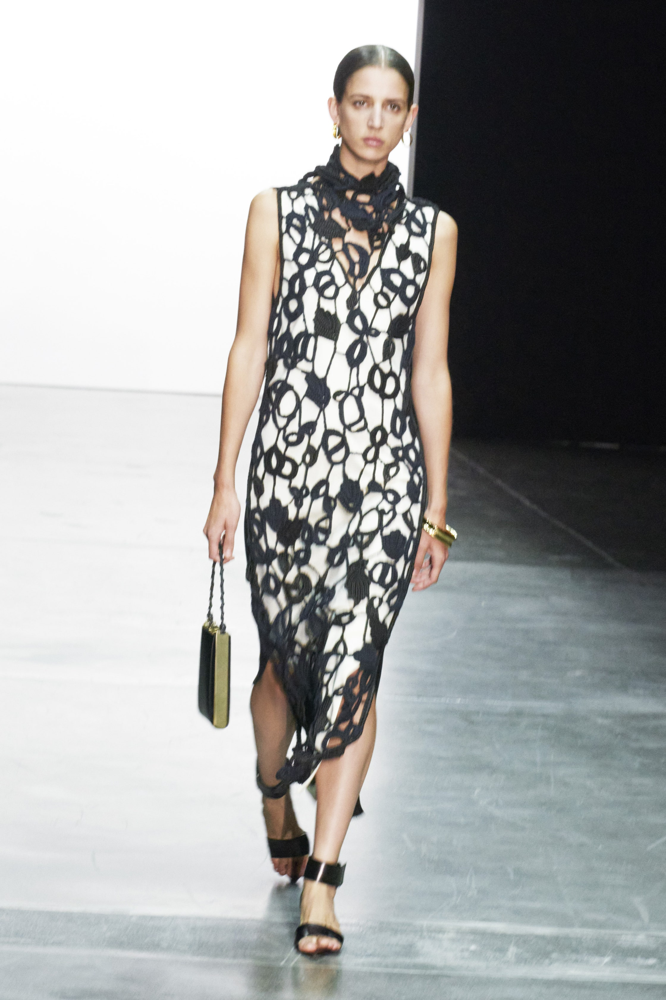
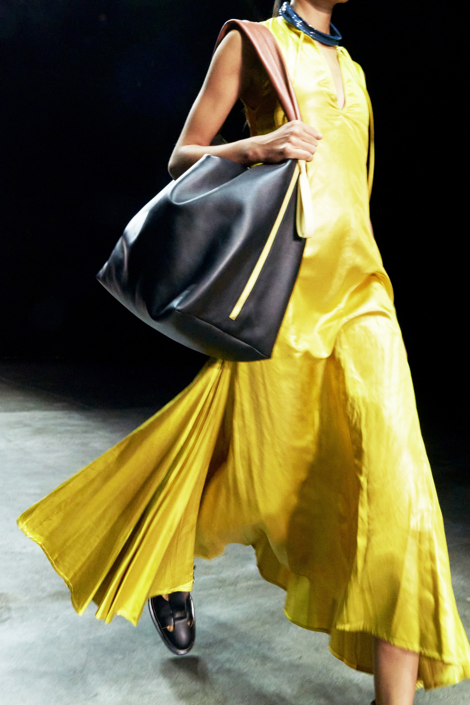
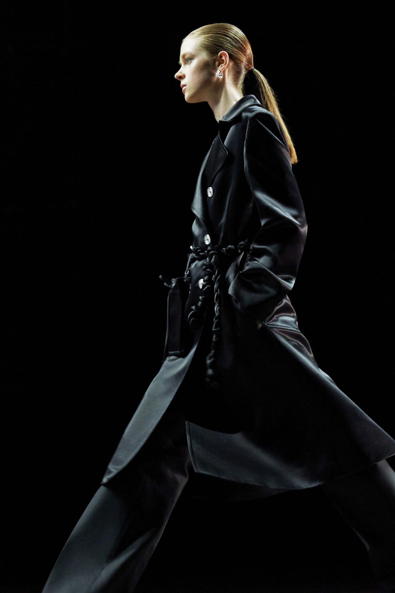
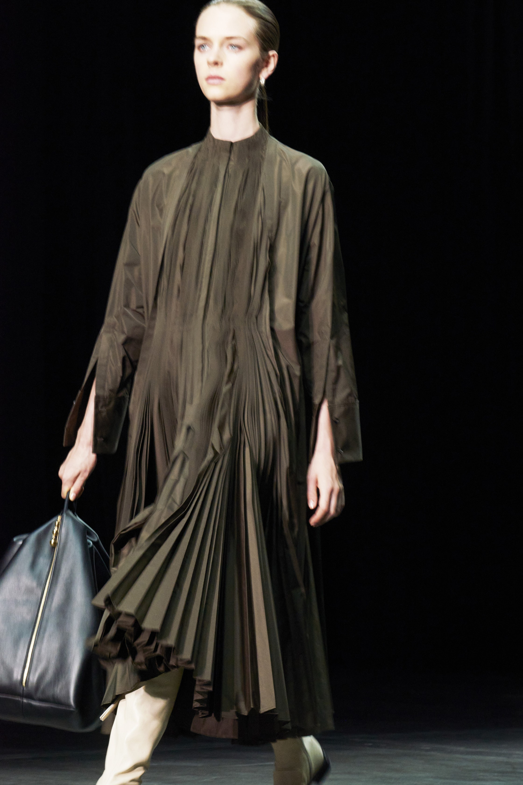
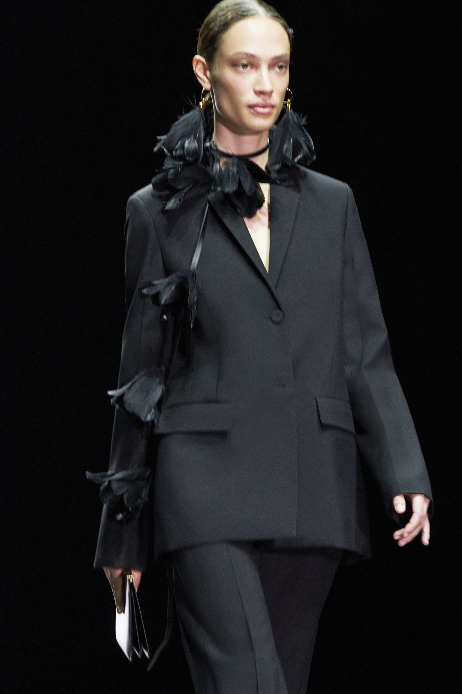

Jil Sander’s greatest achievement was “rekindling the relationship between professionalism and chic.”
Creating a work uniform that was cosmopolitan and cool instead of secretarial pool dowdy was
what enabled her to elevate her company from its modest beginnings in the fashion hinterland of Hamburg,
Germany, to a label favored by some of the world’s most powerful women.
Minimalism is integral to the Jil Sander brand.
The Meiers have a command of that, but their instincts lean crafty;
they like clothes with a human touch.
That came across this season in the hand-crocheted overlays worn
on top of slip dresses and in the way a shawl was tied voluptuously over the shoulders of a sleeveless tee.
A pair of hourglass-y color-block sheaths were a surprise, a glimpse of a more carnal
side that felt especially new in the context of Jil Sander.
They could make for an intriguing line of inquiry.
The collection is enlivened by zingy shots of gold and yellow amid its neutrals: flat metallic leather boots that extend above the knee, a sunny dress that follows the line of the torso but flares gently below the hips.
    